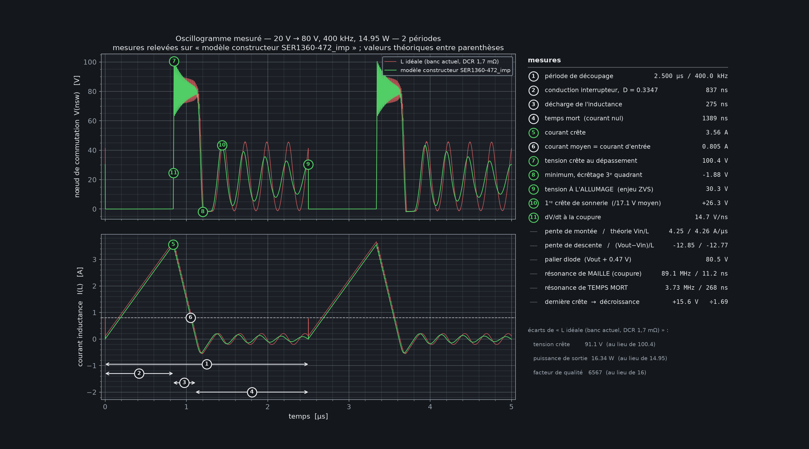
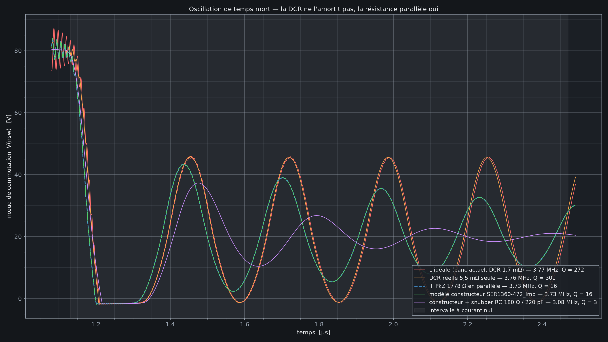
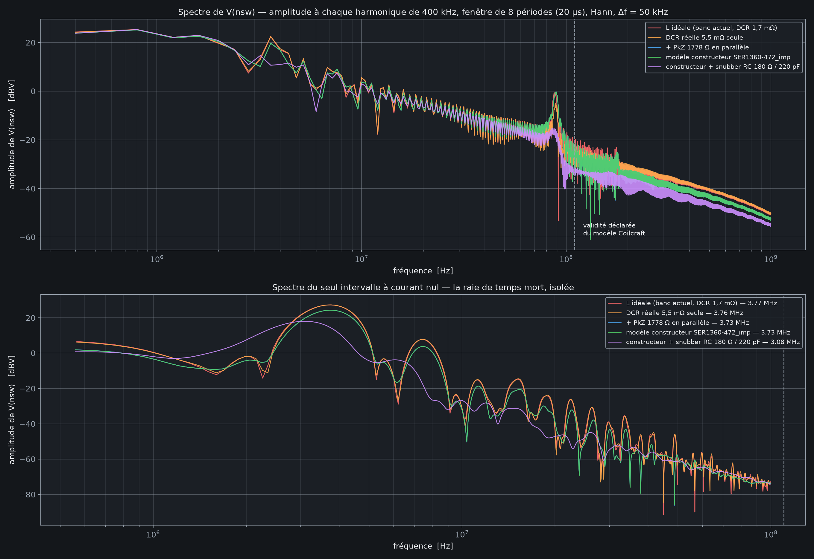
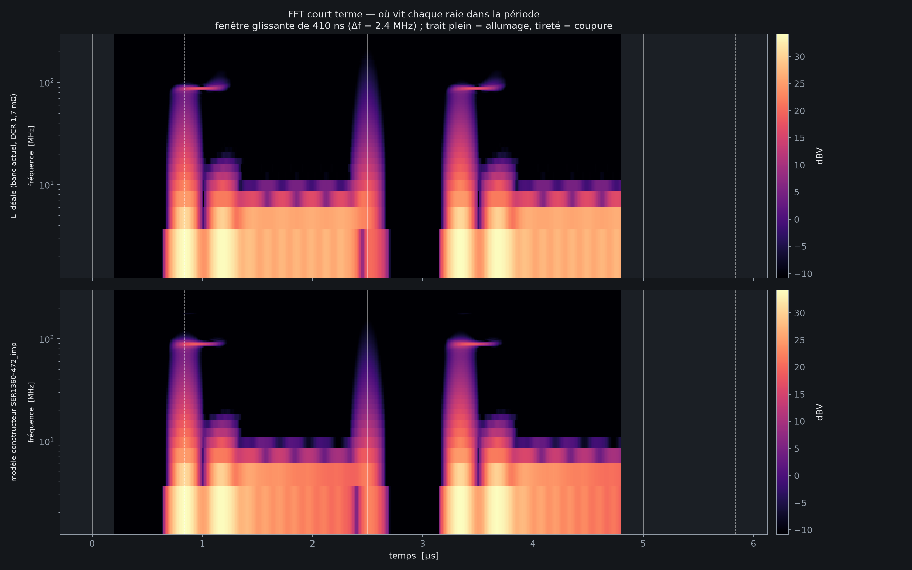
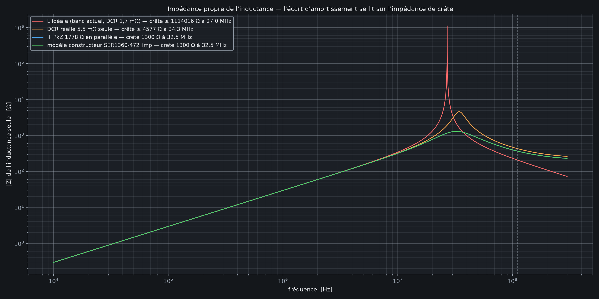
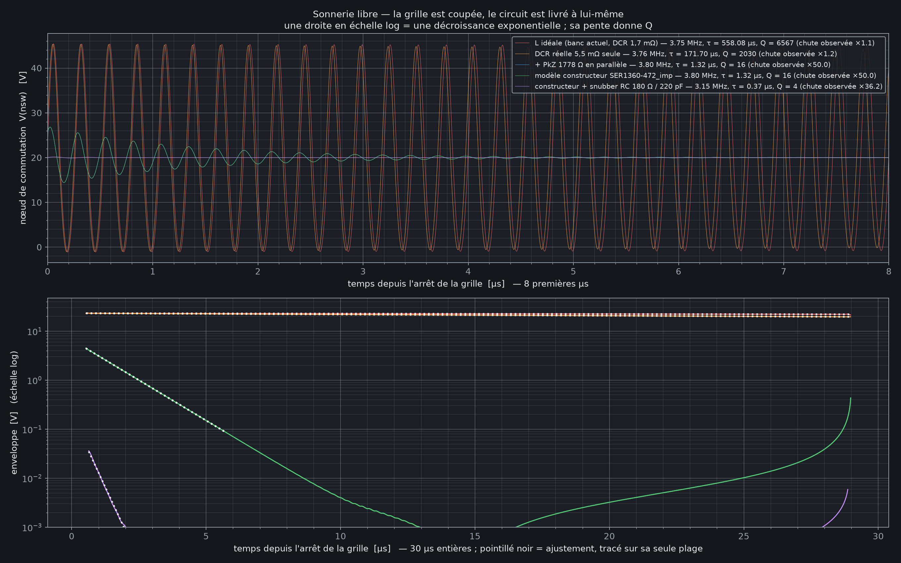
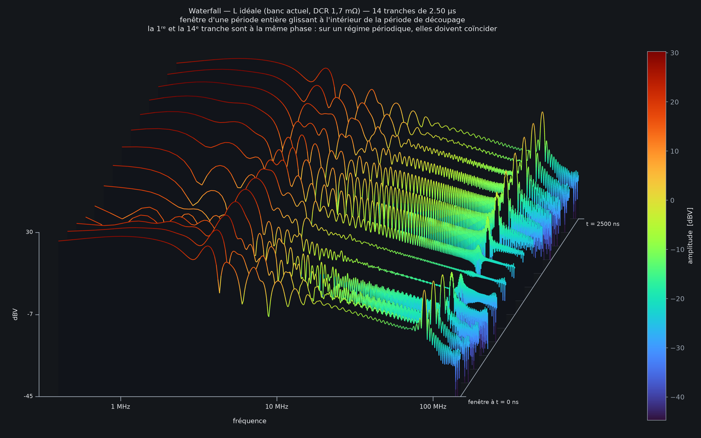
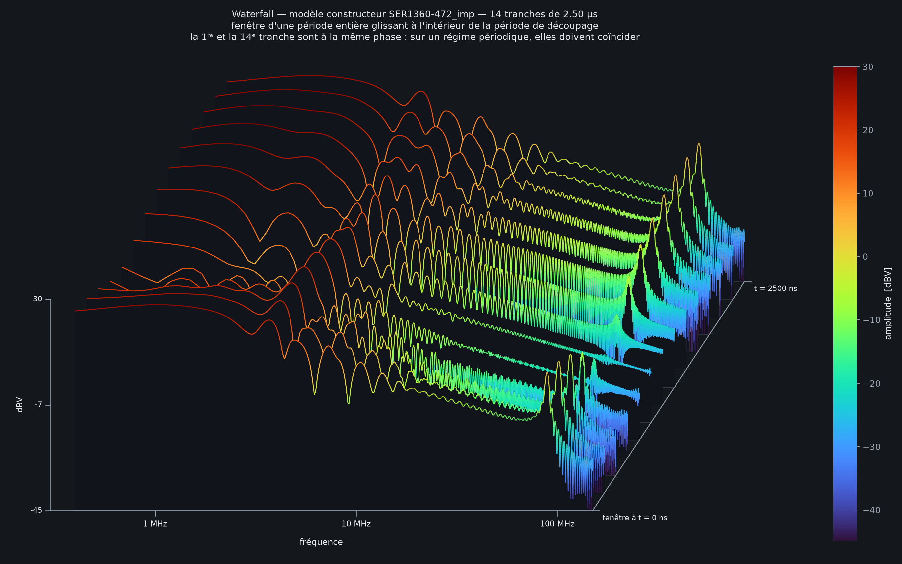

Amortissement de l'oscillation de temps mort
Boost DCM 20 V → 80 V, 400 kHz, D = 0,3347, ≈15 W — cinq variantes d'inductance, un seul point de fonctionnement, rien d'autre qui change.
L'oscillation basse fréquence non amortie est un défaut du modèle, pas du circuit.
Elle disparaît dès que l'inductance porte sa résistance parallèle — pertes fer et effet de peau. Tripler la résistance série ne change rien.
τ passe de 558 µs (220 périodes de découpage) à 1,32 µs, soit moins que la durée du temps mort : l'oscillation s'éteint dans la période. Aucun snubber n'est nécessaire — et il coûterait 509 mW, 35 % du budget de pertes.
Mesures
| variante d'inductance | Pout | fBF | fHF | τ | Q | chute observée | coût |
|---|---|---|---|---|---|---|---|
| L idéale, DCR 1,7 mΩ (banc actuel) | 16,34 W | 3,77 MHz | 88,0 MHz | 558 µs | 6 567 | ×1,1 extrapolé | — |
| DCR réelle 5,5 mΩ seule | 16,09 W | 3,76 MHz | 89,1 MHz | 172 µs | 2 030 | ×1,2 extrapolé | — |
| + PkZ 1778 Ω en parallèle | 14,95 W | 3,73 MHz | 89,1 MHz | 1,32 µs | 16 | ×50 | — |
| modèle constructeur SER1360-472_imp | 14,95 W | 3,73 MHz | 89,1 MHz | 1,32 µs | 16 | ×50 | — |
| + snubber RC 180 Ω / 220 pF | 14,39 W | 3,08 MHz | 88,5 MHz | 0,37 µs | 4 | ×36 | 509 mW |
Les lignes 3 et 4 sont identiques au chiffre près : c'est la preuve que tout l'amortissement tient à la seule résistance parallèle. À rapport cyclique identique, la puissance de sortie varie de 9 % entre le modèle idéal et le modèle réel — l'artefact ne faussait pas que l'allure de la courbe.
1 — Oscillogramme mesuré, 2 périodes, 17 relevés
Les trois phases attendues, avec les grandeurs relevées sur la trace et non recopiées d'une formule : les pentes de courant sont ajustées sur les rampes, le palier est une médiane sur l'intervalle de conduction de la diode, les amplitudes de sonnerie viennent d'une détection de crêtes. Les valeurs théoriques figurent à côté pour comparaison — pentes mesurées 4,25 et −12,85 A/µs contre 4,26 et −12,77 attendues.
Deux chiffres à retenir au-delà de l'amortissement : la tension à l'allumage vaut 30,3 V ⑫ — il n'y a pas de commutation à zéro de tension — et le dV/dt à la coupure atteint 14,7 V/ns ⑰, ce qui pèsera sur le mode commun au chapitre 4. La sonnerie décroît de ÷1,69 sur le temps mort ⑮→⑯ avec le modèle constructeur ; le rouge, lui, garde ses crêtes à 45,5 V.

ouvrir en pleine résolution ↗2 — Zoom sur l'intervalle à courant nul
La figure à utiliser pour mesurer à la règle : grille mineure active, une période de l'oscillation vaut 268 ns. Le tireté bleu est la variante « DCR réelle + PkZ seule » — elle se superpose exactement au modèle constructeur en vert, d'où le tracé en tireté, sans quoi elle disparaîtrait dessous.

ouvrir en pleine résolution ↗3 — Contenu fréquentiel
En haut, l'amplitude à chaque harmonique de 400 kHz : pour un signal périodique c'est le seul contenu réel, tracer tous les bins noircissait la figure. En bas, le spectre du seul intervalle à courant nul, où la raie de temps mort est isolée — l'amortissement la baisse de 3 dB et rabote ses harmoniques de 5 à 10 dB.

ouvrir en pleine résolution ↗4 — FFT court terme
Où vit chaque raie dans la période. La ligne à 88 MHz à l'instant de la coupure, et la bande à 3,7 MHz qui occupe tout le temps mort. En bas, elle pâlit avant l'allumage suivant ; en haut, elle reste franche. Fenêtre de 410 ns, Δf = 2,4 MHz : la fréquence exacte se lit sur la figure 3, pas ici.

ouvrir en pleine résolution ↗5 — Impédance propre de l'inductance
La cause, en une courbe. Le modèle discret culmine à plus de 1,1 MΩ à sa résonance — le balayage ne touche même pas le sommet. Le modèle constructeur culmine à 1 300 Ω. Aucun composant de puissance réel ne dépasse quelques kΩ : au-delà, c'est le modèle qui parle.

ouvrir en pleine résolution ↗6 — Sonnerie libre : la mesure de Q
L'excitation est coupée et le circuit sonne 30 µs. Un Q ajusté sur le seul temps mort n'est pas une mesure quand la décroissance n'y est que de 6 %. En bas, en échelle logarithmique, une droite est une exponentielle et sa pente donne Q. Le pointillé blanc n'est tracé que sur sa plage d'ajustement.

ouvrir en pleine résolution ↗7 — Waterfall isométrique
Deux périodes de trace, quatorze tranches d'une période entière chacune, glissant de 192 ns. La fenêtre se déplace donc à l'intérieur de la période de découpage : ce qui bouge d'une tranche à l'autre est porté par la portion de cycle qui entre et sort de la fenêtre. En deçà d'une période par tranche, le fondamental ne serait plus résolu et le spectre ne décrirait que le découpage imposé. La couleur porte l'amplitude (échelle à droite) ; le rang de la tranche se lit à la profondeur.
Le glissement total vaut exactement une période : la 1ʳᵉ et la 14ᵉ tranche sont donc à la même phase et doivent coïncider sur un régime périodique — contrôle de cohérence porté par la figure elle-même. C'est le cas dans les deux variantes : l'allumage court-circuite le nœud et réarme la résonance à phase identique à chaque cycle. La différence entre les deux est ailleurs — avec le modèle constructeur, les creux entre 3 et 10 MHz sont nettement moins profonds et la bande au-delà de 70 MHz est plus lisse.

ouvrir en pleine résolution ↗
ouvrir en pleine résolution ↗Réserve sur le composant
Ce banc utilise la SER1360-472 et non la SER2013-472 retenue au chapitre 3 : Coilcraft ne publie aucun modèle pour la SER2013-472, cette famille s'arrêtant à 2,0 µH. La SER1360-472 est le seul 4,7 µH de la gamme SER modélisé, et sert ici de substitut documenté pour la seule question de l'amortissement — les deux familles partageant le matériau de noyau. Conséquence pour le chapitre 3 : la mention « modèle SPICE publié : oui » et la résonance propre de 27,1 MHz attribuées à la SER2013-472 doivent être retirées.